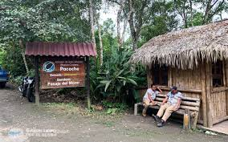
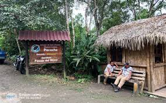

Es el primer puerto turístico, marítimo y pesquero del Ecuador, donde cada año llegan decenas de cruceros. Tiene gran actividad de exportación e importación. Cuenta con un aeropuerto internacional. En las playas de Santa Marianita y San Mateo se practican deportes extremos. Su actividad nocturna es intensa. En su interior cuenta con montañas como Pacoche, San Lorenzo y el Aromo, situados en el centro del territorio cantonal, que ofrecen vegetación y fauna, por donde se hacen recorridos de excursión.
Manta es el primer puerto turístico, marítimo y pesquero del Ecuador. Está asentado en una espléndida bahía, que le ha dado la característica de puerto internacional en el Océano Pacífico. En la época aborígen Manta se llamaba Jocay, que quiere decir casa de los peces. El conquistador Pedro Pizarro describió a Jocay como “una ciudad muy grande, en la que se llegaba al templo por una gran avenida, a cuyos lados se levantaban estatuas de hasta 2.5 metros de altura, construídas en piedra, que representaban a sus jefes y sacerdotes, desnudos de cuerpo, por lo cual los conquistadores españoles las destruyeron”.
En la época prehispánica fue el centro administrativo y religioso de una gran parcialidad llamada Cultura Manteña. La ciudad de Manta está comunicada con todo el país por vía aérea, terrestre y marítima. Su aeropuerto internacional Eloy Alfaro, facilita el flujo constante de turistas y visitantes; por otro lado, las carreteras que la comunican con las más importantes ciudades del país y la provincia dan las debidas facilidades a la transportación.
 Ir a Home
Ir a sitio geografico
Ir a costrumbres
ir a galeria
Ir a Home
Ir a sitio geografico
Ir a costrumbres
ir a galeria
 
